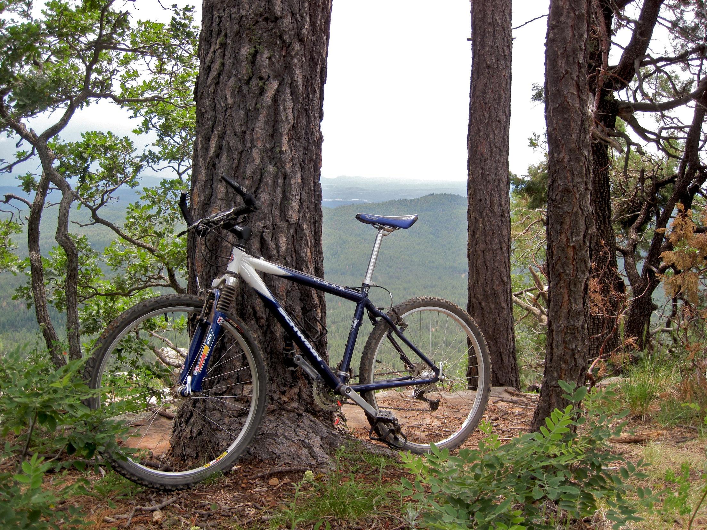

Welcome to Vicious Cycles! Your home for all your casual and fitness biking needs. Here at Vicious Cycles we strive to provide our customers gear, service, and support all in one. You can choose to shop here on our site or come into our Raleigh store to explore in person. Our business caters to those who like to bike as a casual activity, commuters, and fitness biking enthusiasts. Our in-house workshop is the home of an experienced team of bicycle mechanics who are ready to assist with your current gear or build you something of your very own.
Here on our website and in-store we sell many types of bikes including touring bikes, mountain bikes, city bikes, or your very own custom built right here in our workshop with our very talented and experienced team of mechanics. We provide detailed specifications on our website as well as comprehensive information available about any of our products in store. You can also bring your bike by anytime and our mechanics would be happy to help with any maintenance issues or questions you may have.
Vicious Cycles carries many of your favorite brands for bikes and the gear that goes with them. Some of those brands include Surly, Trek, Giant, Canyon, Cannondale, and more! A bike can have a lot of accessories and there are always the necessities like a helmet that fits well. Order online or get measured in store if you are unsure of your size. Always feel free to contact our store for help if you are looking for something specific.
Check our online shop and social media regularly for new products and promotions that can be used online and in person. No matter your financial situation or riding experience we can help you find the right equipment for your needs.